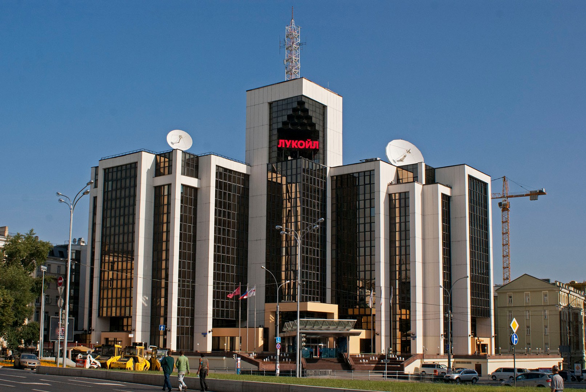
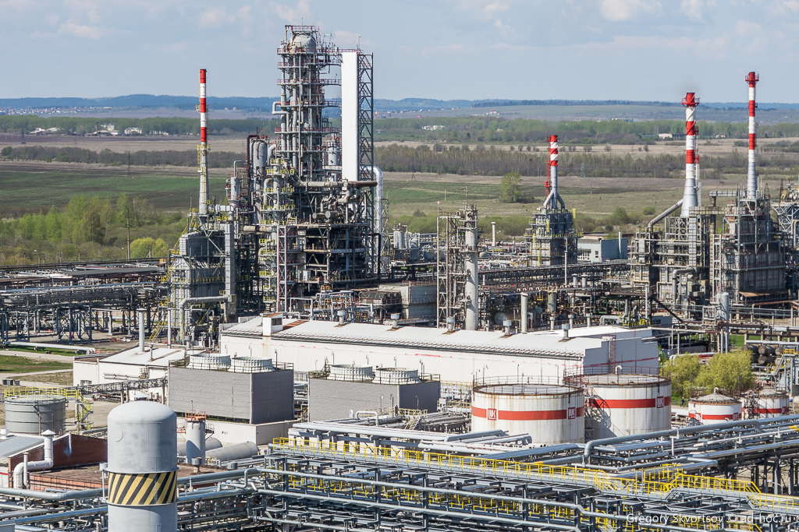
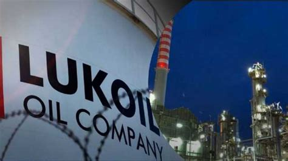

Информация о компании «Лукойл»
Общие сведения
ПАО «ЛУКОЙЛ» — одна из крупнейших частных нефтегазовых компаний в мире. Основана 25 ноября 1991 года. Название компании образовано из первых букв городов Лангепас, Урай и Когалым, где располагались объединённые предприятия, и английского слова «oil» (нефть).
История компании
Основана в 1991 году в России. Основателем и многолетним президентом компании является Вагит Юсуфович Алекперов, сыгравший ключевую роль в её становлении и развитии.
На начальном этапе «ЛУКОЙЛ» объединил активы в добыче, переработке и сбыте нефти и нефтепродуктов. В 1993 году компания была преобразована в открытое акционерное общество, а также был создан Благотворительный фонд «ЛУКОЙЛ», ставший одним из первых корпоративных фондов в России.
В середине 1990-х годов ЛУКОЙЛ начал расширение за пределы России, приобрел контрольные пакеты ряда добывающих и перерабатывающих предприятий внутри страны, а также подписал контракты на участие в разработке крупных нефтяных месторождений за рубежом, включая месторождение Западная Курна-2 в Ираке. В 1999 году компания купила Одесский нефтеперерабатывающий завод в Украине и нефтеперерабатывающий завод в Болгарии.
В 2000-х и 2010-х годах компания активно развивала международные проекты в Европе, на Ближнем Востоке, в Северной и Южной Америке. Она также усилила свою деятельность в сфере переработки и нефтехимии. Однако с 2014 года, на фоне изменения политической обстановки и экономических санкций, ЛУКОЙЛ начал оптимизацию активов за пределами России, продав сеть заправок в ряде стран Восточной Европы.
События 2022 года, связанные с началом специальной военной операции на Украине и последующими санкциями, сильно повлияли на компанию: стоимость акций ЛУКОЙЛа резко упала, а Вагит Алекперов покинул пост президента и совет директоров. Несмотря на трудности, ЛУКОЙЛ продолжает реализовывать крупные международные проекты, в том числе планирует увеличение добычи нефти на иракском месторождении Западная Курна-2.
Сегодня ЛУКОЙЛ является одной из крупнейших частных нефтяных компаний в мире, сохраняя вертикально интегрированную структуру бизнеса — от геологоразведки до розничной реализации нефтепродуктов. Компания активно участвует в социальных, образовательных и экологических программах, поддерживает регионы своего присутствия и инвестирует в развитие новых технологий в области энергетики.
Чем занимается данная компания?
 Компания занимается разведкой, добычей, переработкой и реализацией нефти и газа, а также производством нефтехимической продукции.
ЛУКОЙЛ осуществляет полный цикл нефтегазовой деятельности, включая:
- разведку и добычу нефти и газа
- транспортировку и переработку углеводородов
- производство и сбыт нефтепродуктов и нефтехимической продукции
- развитие собственной сети автозаправочных станций в России и за рубежом
- геологоразведочные и научно-исследовательские работы в области повышения эффективности добычи
ЛУКОЙЛ активно занимается геологоразведкой и добычей углеводородов как в России, так и за рубежом. Основные добывающие регионы в России включают Западную Сибирь, Поволжье, Урал и Тимано-Печору. Компания также участвует в международных проектах, таких как разработка месторождения Западная Курна-2 в Ираке. ЛУКОЙЛ применяет современные технологии бурения и разработки месторождений, включая горизонтальное бурение и методы увеличения нефтеотдачи пластов
Компания владеет и управляет разветвлённой сетью трубопроводов, нефтебаз и терминалов, обеспечивая эффективную транспортировку нефти и газа от мест добычи до перерабатывающих заводов и конечных потребителей. ЛУКОЙЛ также обладает мощностями по переработке углеводородов, включая нефтеперерабатывающие заводы в России и за рубежом. Эти предприятия производят широкий спектр нефтепродуктов, соответствующих международным экологическим стандартам.
ЛУКОЙЛ производит разнообразные нефтепродукты, включая бензины, дизельное топливо, мазут, смазочные материалы и битумы. Компания также развивает нефтехимическое направление, производя продукцию, такую как полиэтилен, полипропилен и другие химические вещества, используемые в различных отраслях промышленности. Сбыт осуществляется как на внутреннем рынке России, так и в странах Европы, Азии и Америки.
ЛУКОЙЛ управляет широкой сетью автозаправочных станций (АЗС) под собственным брендом в России и за её пределами. Станции предлагают высококачественные виды топлива, соответствующие стандарту Евро-5, а также дополнительные услуги для водителей. Компания постоянно модернизирует и расширяет свою сеть АЗС, внедряя современные технологии обслуживания и оплаты.
ЛУКОЙЛ инвестирует в научные исследования и разработки, направленные на повышение эффективности добычи и переработки углеводородов. Компания осуществляет геологоразведочные работы с использованием передовых методов, включая сейсморазведку и моделирование пластов. Научно-исследовательские центры ЛУКОЙЛа разрабатывают инновационные технологии для освоения трудноизвлекаемых запасов и повышения экологической безопасности производственных процессов.